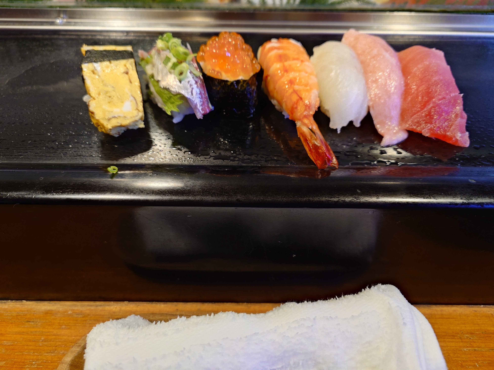
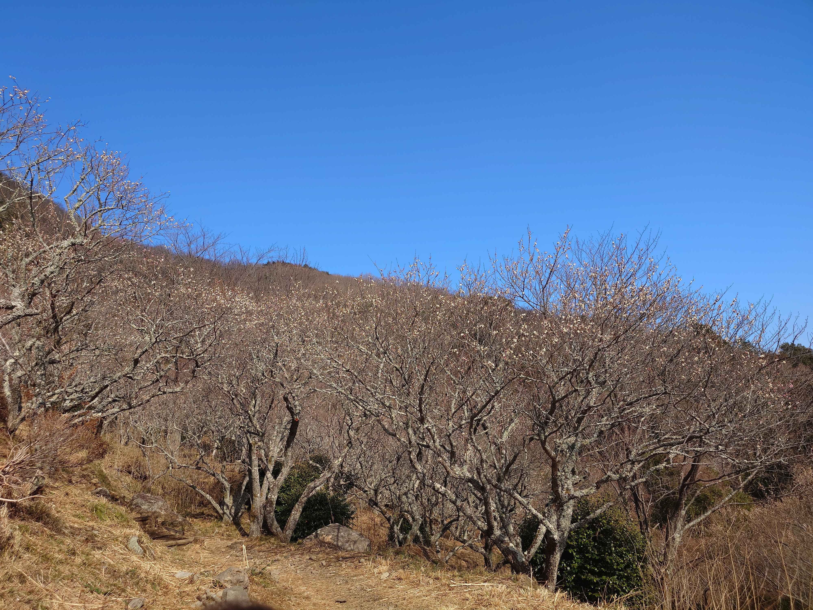
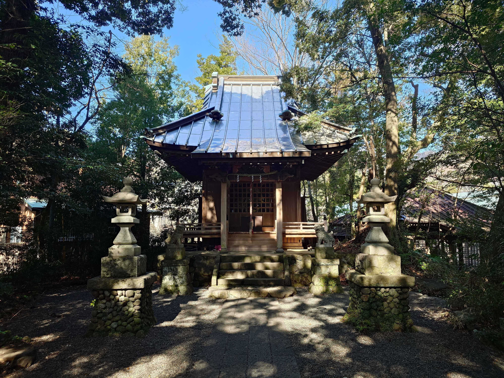
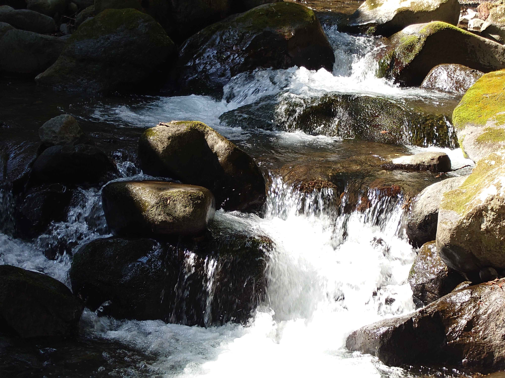
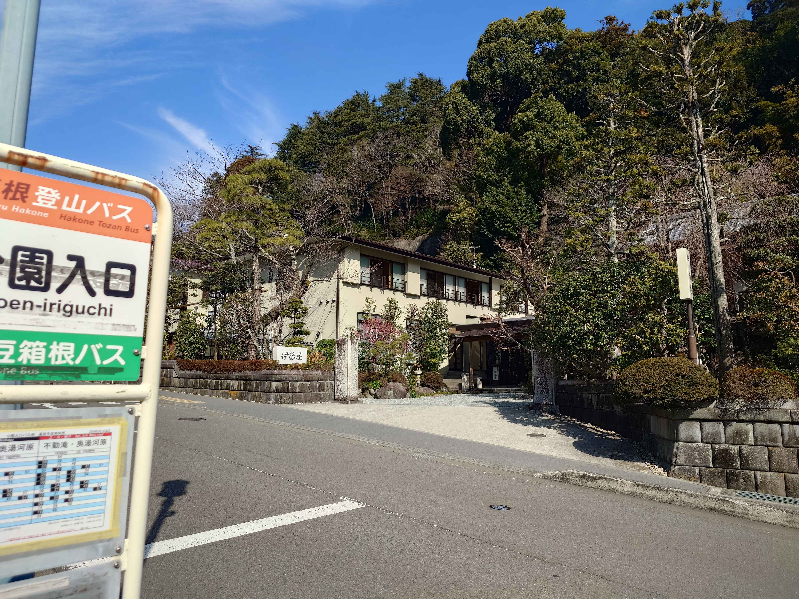
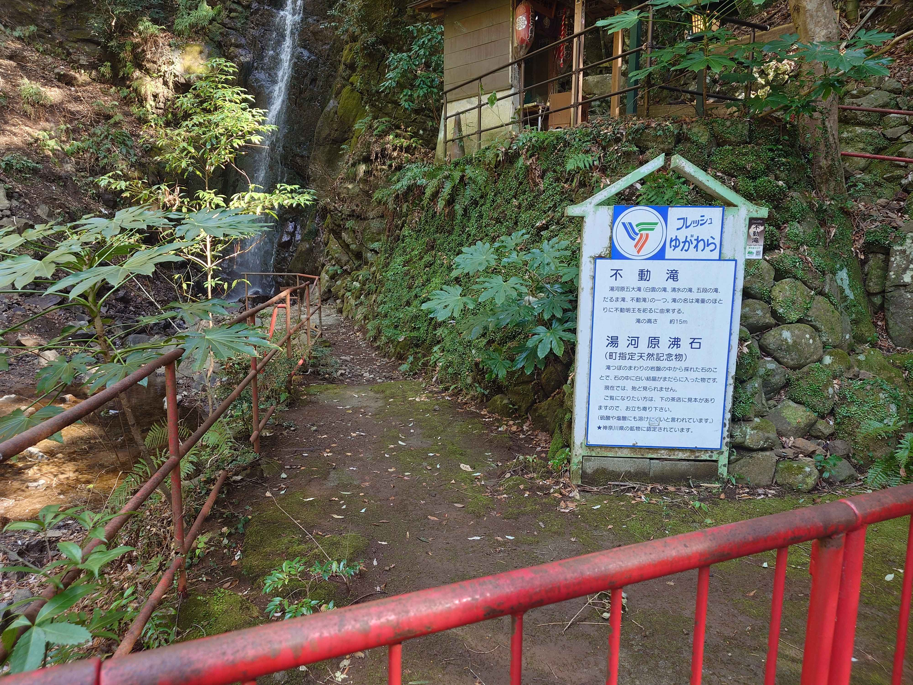
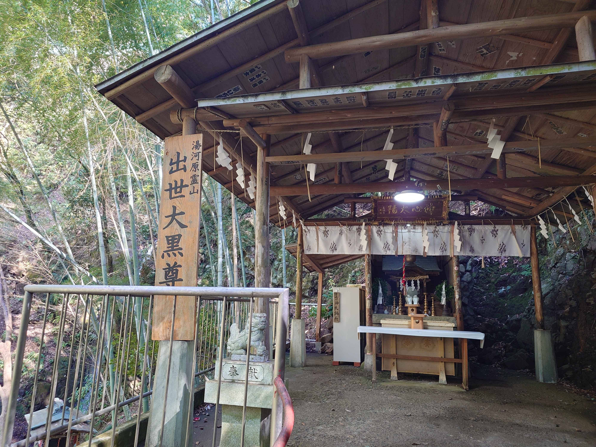
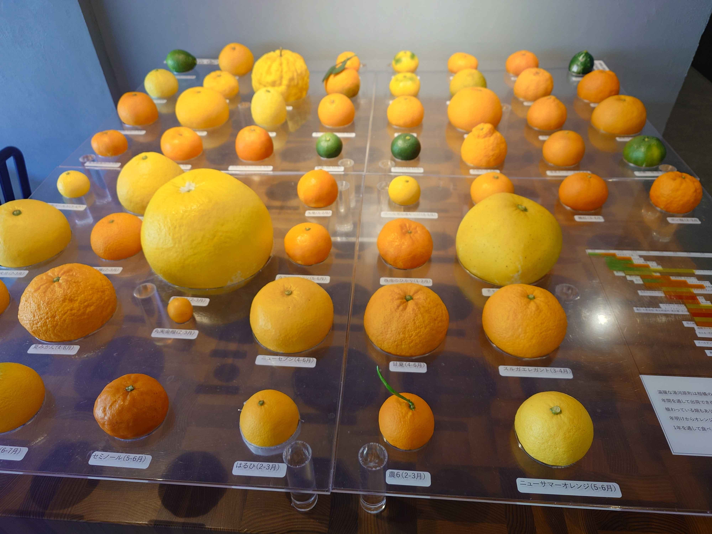

湯河原に行ってきた話
海と山の街、湯河原に旅行に行ってきた話をします。
列車
東京から特急踊り子で1時間ちょっと。
熱海より近い温泉観光地で、平日に行ったからか、だいぶ空いていました。
もう少しすると梅が満開になる時期なので、そうなると平日でも混んでるかもしれません。
初日 お昼ごはん 寿司春
寿司春さんでお寿司を頂きました。

年配の大将と奥さんがやっているお店で、カウンター席とお座敷があります。
ちらし鮨はお米が多めでボリュームあり。写真の通り握りをいただきましたが、これも満足できる美味しさでした。
回らないタイプのお寿司屋さんはほとんど行かないので、緊張しますね。
散策

梅林行きのバスが出るまで時間があったので、海を見に行きました。
よく晴れていてこの時期でも寒くなく、きれいな青い海を眺められました。

鳩もたくさん屯していましたが、心做しかいつも見ている鳩よりふくよかだったような。
梅林

3月の上旬まで、梅の宴なるイベントが開催されており、梅林を歩くことができます。
JR湯河原駅から送迎バス1が出ていて、今回は余裕を持って乗れましたが、休日や梅の見頃には満員になってしまいそうです。
梅林の入園料は300円2ですが、そこでもらえるチラシや入場チケットで、近隣のホテル・飲食店などが同額割り引かれるなどするため、実質-300円3です。
梅林はほとんど山道で、軽い登山4になります。


まだ五分咲きとのことでしたが、日がよく当たるためか、山の上のほうに行くほど咲いていました。
輪違い、楊貴妃、白加賀、淡路枝垂など、様々な品種が見られます。
ホテル
今回のホテルは眺望山荘さん。
かなり険しい道を登っていく必要があるため、今回はタクシーを使いました。
狭い急斜面をスイスイ登って行ってくれるベテラン運転手さんでした。

かなり登った上にあるため、その名の通り眺望がすごいです。
山と海、湯河原の街を一望できる良い宿でした。
この時期だと朝7時から日の出が見られますよ、と教えていただきましたが、夫婦揃って寝過ごしてしまい、日の出自体は見られませんでした。

湯河原である以上温泉もあり、和風と洋風の2種類があります。
それぞれ、男女で時間ごとに別れています。どちらも露天風呂もあるんですが、今回は流石に寒いので室内のみ浸かってきました。

脱衣所に猿注意なんて張り紙があったよ、と夫婦で笑っていたら、なんと部屋の窓から本当に猿が見えました。

いるものなんですね。
朝食と夕食の時間は決まっていて、準備ができるとフロントから電話が来ます。
洋食に、自家製の焼き立てパンです。
みかんジュースもおいしいですね。
帰りは、ホテルの奥さんが車で万葉公園まで送ってくれました。
急斜面なので下りこそ怖い道ですが、「慣れですね」とスイスイ運転してくれました。
万葉公園
翌日、観光にと向かったのは万葉公園。

熊野神社なる神社がありました。

川がめちゃくちゃキレイで、川底が見えます。
伊藤屋

2・26事件の舞台となった伊藤屋。万葉公園のすぐそばにあります。
なお、バス停は公園入口になっていますが、落合橋バス停のほうが万葉公園に行くには近いです。5
不動滝

せっかくだからと、奥湯河原方面に足を伸ばして不動滝まで行ってきました。
観光スポットではあるみたいですが、本当に滝と出世大黒尊、身代り不動尊がいるだけで、一瞬で見終わります。

なお、身代わり不動尊は安全のためか、賽銭箱だけ下に置かれていて、近づけないようになっていました。
みかん

湯河原では、あちこちでみかんの販売が行われています。
写真のような無人販売もあれば、駅前では人が立って販売していました。
みかんの木が普通に民家の庭に植わっていたり、道路端にみかんが落ちていたりします。

万葉公園にはこんなみかん図鑑も。
ひときわ巨大な晩白柚は熊本産で、湯河原とは特に関係なさそうでした。
お土産
写真を取り忘れましたが、お土産にはスイーツファクトリーTIVORIのお菓子を買いました。
mini工場見学もできるし、アウトレット品が安く買えたりします。
帰り

帰りに湯河原駅のホームから撮影した鳥さん。
胸の辺りが赤かったので、メスのイソヒヨドリでしょうか。